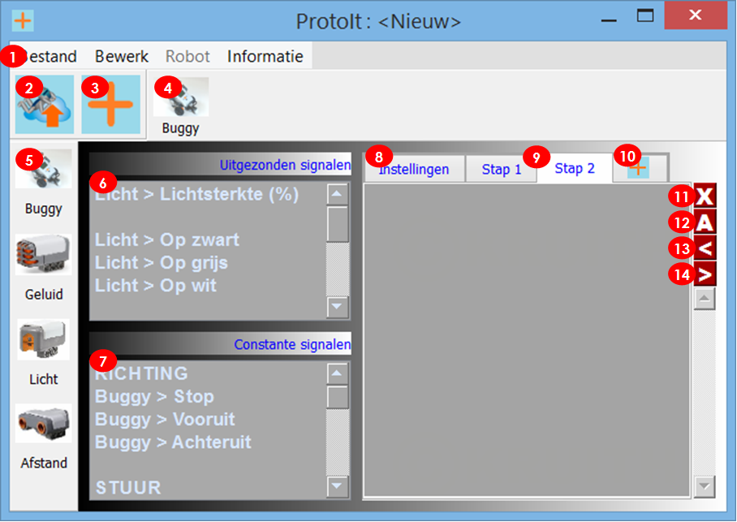
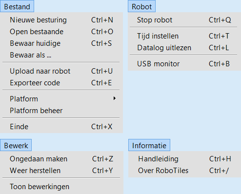
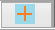

Het programmeerscherm
Indeling van het scherm

- Menu
- Upload het programma naar de robot
- Voeg een apparaat aan het programma toe
- Snelmenu Actuatoren (programmeerbare apparaten)
- Snelmenu Sensoren (apparaten die signalen uitzenden)
- Lijst met de door een apparaat uitgezonden signalen
- Lijst met vooringestelde signalen van een apparaat
- Tabblad met daarop de instellingen van de apparaten
- Tabbladen met de programmastappen
- Knop om een programmastap toe te voegen
- Verwijder de actieve programmastap.
- Geef de actieve programmastap een begrijpelijke naam
- Verschuif de actieve programmastap één plaats naar voren.
- Verschuif de actieve programmastap één plaats naar achteren.
(1) Het menu
ProtoIt heeft vier menu’s:

Deze menu’s worden verder besproken bij het onderwerp RoboTile menu´s.
Welke menu-opties beschikbaar zijn kan per platform verschillen.
(2) Upload een programma
De upload-knop van ProtoIt.
Hoe een programma naar de robot wordt geüpload verschilt per platform.
Wordt er geüpload vanaf een pc, dan is er een usb-kabel of bluetooth-verbinding nodig (bijv. Minstorms en Arduino).
Soms start het programma vanzelf (Arduino) of je moet moet het programma handmatig starten (Mindstorms).
Draait ProtoIt op de robot zelf (bijv. Raspberry), dan start ProtoIt het programma als zelfstandige app.
(3) Een model, apparaat of functie toevoegen
Met deze knop voeg je in ProtoIt apparaten toe.
Verwar de knop niet met die om een stap toe te voegen:

Door op de knop ’toevoegen’ te klikken, krijg je een scherm met drie lijsten te zien: modellen, apparaten en functies.
Standaardmodellen en geïmporteerde modellen vind je terug in de lijst met modellen.
Een model bestaat uit meerdere apparaten en functies die aan je programma worden toegevoegd.
Losse apparaten en functies vind je in de lijsten van apparaten en functies.
Als je een item uit een lijst aanklikt, verschijnt er een beschrijving van hoe dat item werkt.
Je kunt meerdere items tegelijk selecteren en toevoegen.
De toegevoegde apparaten verschijnen in de snelmenu’s Sensoren en Actuatoren.
Functies (zoals berekeningen of vergelijkingen) worden op dezelfde manier gebruikt als apparaten (zoals knoppen en motoren).
In deze handleiding wordt er daarom geen onderscheid tussen gemaakt.
Overal waar ’apparaten’ staat, moet je bedenken dat dit ook voor de functies geldt.
(4) Het snelmenu Actuatoren
In het snelmenu Actuatoren staan de apparaten die signalen ontvangen en erop reageren.
Door op een actuator te klikken plaats je zijn programmategel in de programmastap waar je op dat moment mee bezig bent.
Op de programmategel vind je invulvakjes voor de signalen die het apparaat nodig heeft om te functioneren.
Sleep signalen uit de lijst Uitgezonden signalen of Constante signalen naar de invulvakjes van de programmategels.
Zo bepaal je hoe de apparaten op de signalen reageren en zorg je ervoor dat een programmastap iets doet.
In dezelfde programmastap kan per apparaat maar één programmategel worden geplaatst.
Deze tegel mag al wel in andere programmastappen voorkomen.
(5) Het snelmenu Sensoren
Het snelmenu Sensoren staan de apparaten die signalen uitzenden.
Door op een sensor te klikken, komen zijn signalen beschikbaar voor je programma.
De signalen verschijnen rechts van het snelmenu in twee lijsten:
in de lijst met Uitgezonden signalen (6) en de lijst met Constante signalen (7).
(6) Uitgezonden signalen
Onder het kopje Het snelmenu Sensoren (5) is beschreven hoe je signalen tot je beschikking krijgt in de lijst Uitgezonden signalen.
In deze lijst vind je de signalen die voortdurend van waarde veranderen. Dat kan bijvoorbeeld de afstand tot een voorwerp zijn.
Wanneer de buggy ernaar toe rijdt, wordt de afstand steeds kleiner. In dat geval zal het betreffende signaal ook een steeds kleinere waarde krijgen.
Wat de waarde van een signaal voorstelt, lees je aan de naam van het signaal af, bijvoorbeeld Afstand (cm).
Uitgebreide informatie krijg je bij het toevoegen van het apparaat. Zie het kopje Een model, apparaat of functie toevoegen (3).
Versleep de signalen uit de lijst met Uitgezonden signalen naar de invulvakjes van de programmategels in een programmastap.
(7) Constante signalen
Onder het kopje Het snelmenu Sensoren (5) is beschreven hoe je signalen tot je beschikking krijgt in de lijst Constante signalen.
Constante signalen veranderen nooit van waarde. Bijvoorbeeld blijft het signaal Stop altijd hetzelfde.
Je kunt de Constante signalen op twee manieren gebruiken:
om de invulvakjes van de programmategels foutloos in te vullen.
om te vergelijken met één van de uitgezonden signalen.
(ProtoIt bevat meerdere functies waarmee je signalen kunt vergelijken om te beslissen wat er moet gebeuren.)
Versleep de signalen uit de lijst met Constante signalen naar de invulvakjes van de programmategels in een programmastap.
(8) Het tabblad Instellingen
Alle toegevoegde apparaten verschijnen op het tabblad Instellingen. Ook als er niets aan een apparaat in te stellen valt.
Het verschilt per apparaat wat er moet worden ingesteld. Bij losse apparaten van Mindstorms moet bijvoorbeeld de poort worden
opgegeven waarop het apparaat is aangesloten. Bij Arduino en Raspberry zul je vaak een pinnummer op moeten geven.
(9) De tabbladen met de programmastappen
Alle programmastappen hebben een eigen tabblad. Dat maakt het gemakkelijk om door de stappen te bladeren.
Maar let op: Vanwege de tabbladen lijkt het alsof de programmastappen achter elkaar worden uitgevoerd. Dit is niet het geval.
Nadat de activiteit van een programmastap is afgerond, zal de volgende stap niet automatisch starten.

De functie
Stap naar.
Gebruik de programmategel van de speciale Stap naar-functie om naar een andere stap te springen.
Dat kan de volgende stap zijn, maar ook een willekeurige.
Zorg ervoor dat de programmastappen in een logische volgorde staan, anders krijg je een rommelig programma.
(10) Een programmastap toevoegen
Met deze knop voeg je een programmastap toe achter de stap waar je mee bezig bent.
Dit zal over het algemeen de laatste stap zijn.
Door eerst een andere stap aan te klikken, komt de nieuwe stap daarachter te staan en niet aan het eind.
Wanneer je een stap vóór de eerste stap wilt invoegen,
moet je eerst het tabblad Instellingen aanklikken.
ProtoIt start een programma altijd met de programmastap direct na het tabblad Instellingen.
Dit is de enige stap die automatisch wordt uitgevoerd.
Alle andere programmastappen worden niet automatisch in je programma opgenomen.
Een stap wordt pas uitgevoerd als je in een bestaande stap de speciale functie Stap naar gebruikt en
deze naar de nieuwe stap laat verwijzen.
Na het tussenvoegen van een programmastap zal ProtoIt alle stappen opnieuw nummeren.
Ook alle verwijzingen naar stapnummers in de functie Stap naar worden automatisch aangepast.
Verwijzingen naar stapnamen of met de constante signalen Volgende en Vorige blijven echter onveranderd.
(11) Een programmastap verwijderen
Het is alleen mogelijk om een lege programmastap te verwijderen.
Verwijder eerst alle programmategels en daarna de stap zelf.
ProtoIt zal de programmastappen opnieuw nummeren.
Ook alle verwijzingen naar stapnummers in de functie Stap naar worden automatisch aangepast.
Verwijzingen naar stapnamen of met de constante signalen Volgende en Vorige blijven echter onveranderd.
(12) De naam van een programmastap
Bij het toevoegen van een programmastap krijgt deze automatisch een volgnummer.
Met veel programmastappen wordt het lastig om te onthouden wat in welke stap gebeurt.
Het is een goede gewoonte om de programmastappen van een zinvolle naam te voorzien.
In de speciale Stap naar-functie verwijs je dan naar de namen in plaats van de nummers.
Let op dat je de naam van een stap precies schrijft zoals deze op het tabblad staat.
Houd daarbij rekening met hoofdletters en kleine letters.
(13) Schuif een programmastap naar voren
Het kan zijn dat je na verloop van tijd een andere volgorde van de programmastappen beter vindt.
Met deze knop verschuift een programmastap één positie naar voren.
ProtoIt zal de programmastappen opnieuw nummeren.
Ook alle verwijzingen naar stapnummers in de functie Stap naar worden automatisch aangepast.
Verwijzingen naar stapnamen of met de constante signalen Volgende en Vorige blijven echter onveranderd.
(14) Schuif een programmastap naar achteren
Het kan zijn dat je na verloop van tijd een andere volgorde van de programmastappen beter vindt.
Met deze knop verschuift een programmastap één positie naar achteren.
ProtoIt zal de programmastappen opnieuw nummeren.
Ook alle verwijzingen naar stapnummers in de functie Stap naar worden automatisch aangepast.
Verwijzingen naar stapnamen of met de constante signalen Volgende en Vorige blijven echter onveranderd.